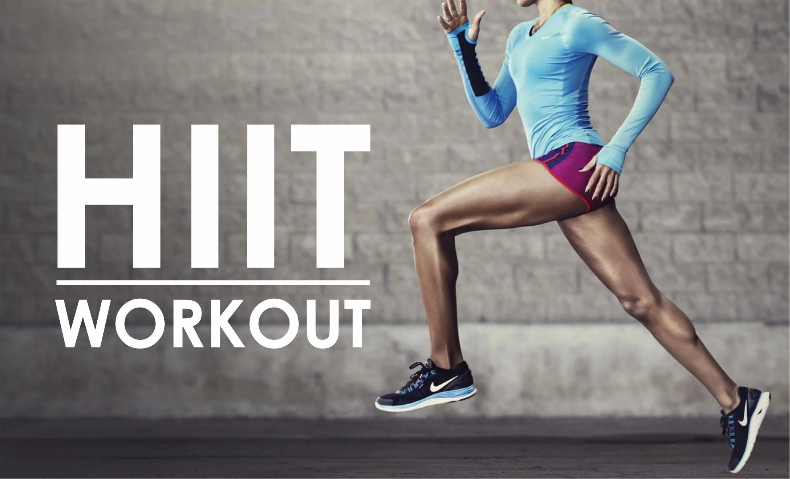
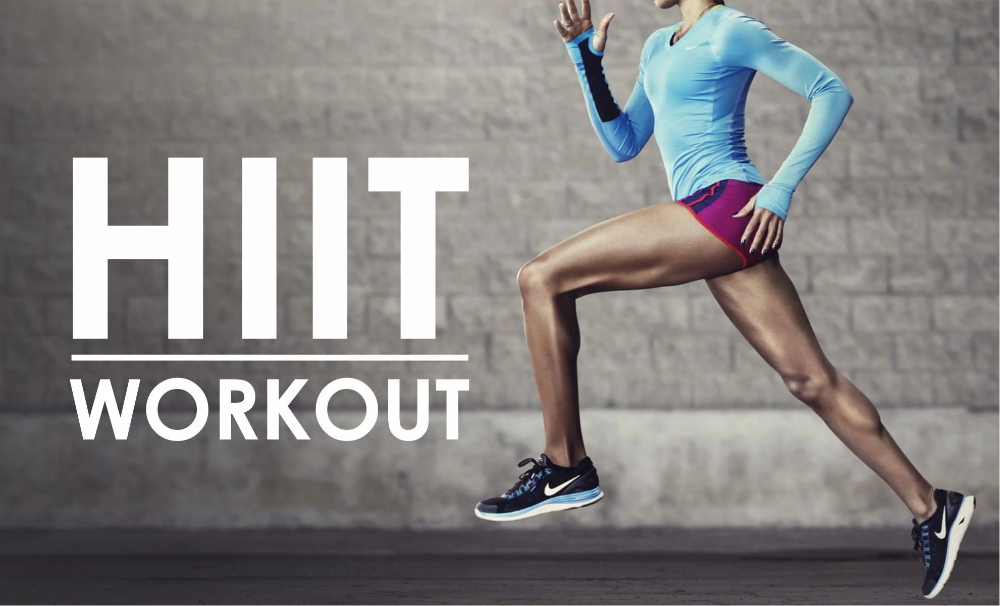
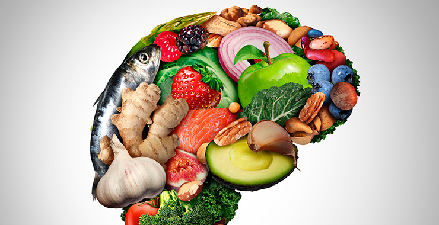

Nova Pesquisa sobre Treino HIIT
15 de Março de 2024
Estudos recentes mostram que o Treino Intervalado de Alta Intensidade (HIIT) pode ser mais eficaz quando...
15 de Março de 2024
Estudos recentes mostram que o Treino Intervalado de Alta Intensidade (HIIT) pode ser mais eficaz quando...
12 de Março de 2024
Um estudo abrangente revela novos benefícios das dietas à base de plantas para atletas...